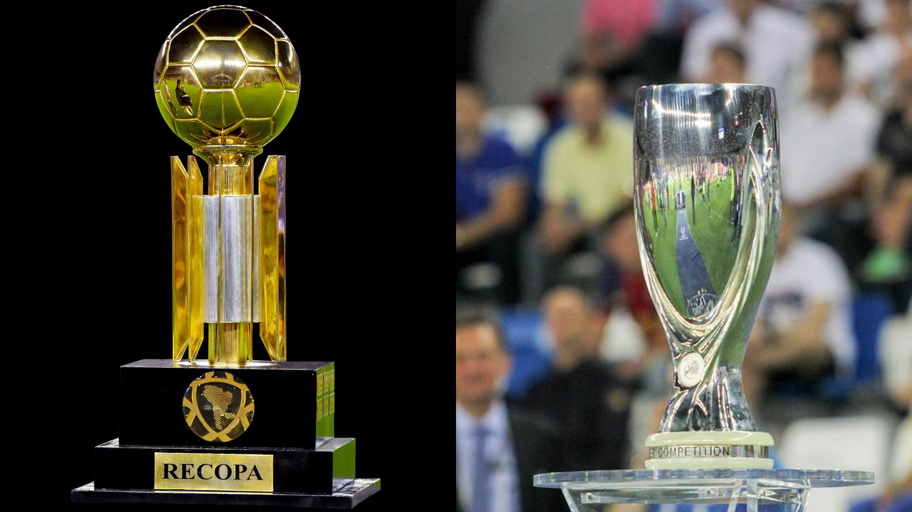

A Recopa Sul-Americana e a Supercopa da UEFA ocupam posições semelhantes no calendário internacional: ambas promovem um confronto entre clubes que chegam credenciados por títulos continentais conquistados na temporada anterior. A ideia é parecida, mas o caminho histórico das duas competições e, principalmente, seus formatos atuais são diferentes.
Na América do Sul, a CONMEBOL Recopa reúne atualmente o campeão da Libertadores e o vencedor da Copa Sul-Americana. Na Europa, a Supercopa da UEFA coloca frente a frente o campeão da Champions League e o vencedor da Europa League.
Além da taça, os torneios carregam um elemento simbólico importante: são oportunidades para campeões de competições diferentes medirem forças diretamente. É justamente essa característica que transforma Recopa e Supercopa em jogos especiais no calendário de clubes.
Como funciona a Recopa Sul-Americana
Começou a ser disputada em 1989. O Nacional, do Uruguai, foi o primeiro campeão da história. Na origem, a competição reunia os vencedores da Copa Libertadores e da antiga Supercopa Sul-Americana. Com as mudanças na estrutura das competições da CONMEBOL, o modelo atual passou a colocar frente a frente, desde 2003, os campeões da Libertadores e da Copa Sul-Americana.
A disputa atual acontece em partidas de ida e volta. A edição de 2026, por exemplo, colocou Flamengo, campeão da Libertadores de 2025, e Lanús, vencedor da Sul-Americana de 2025, em uma série de dois confrontos.
Esse formato é uma das principais diferenças em relação à Supercopa da UEFA, que atualmente é resolvida em apenas uma partida.
O atual campeão
O Lanús conquistou a Recopa Sul-Americana pela primeira vez em 2026. O clube argentino derrotou o Flamengo por 1 a 0 no jogo de ida, disputado na Argentina, com gol de Rodrigo Castillo, e voltou a vencer no duelo decisivo no Rio de Janeiro.
No Maracanã, o Lanús ganhou por 3 a 2 após a prorrogação e fechou o confronto com 4 a 2 no placar agregado. O título tornou o clube argentino o campeão mais recente da competição. A decisão teve um roteiro incomum: o Flamengo venceu por 2 a 1 nos 90 minutos e igualou o confronto no agregado, mas o time argentino decidiu a taça no tempo extra.
.
Os clubes brasileiros já foram campeões
O Brasil construiu uma presença importante no histórico da competição. São Paulo, Internacional e Grêmio são os brasileiros com mais títulos, com duas conquistas cada.
Os campeões brasileiros da Recopa Sul-Americana:
- São Paulo — 1993 e 1994
- Grêmio — 1996 e 2018
- Internacional — 2007 e 2011
- Cruzeiro — 1998
- Flamengo — 2020
- Palmeiras — 2022
- Santos — 2012
- Corinthians — 2013
- Atlético Mineiro — 2014
- Fluminense — 2024
O maior campeão
O Boca Juniors ocupa o topo do ranking histórico da Recopa, com quatro títulos. O River Plate aparece logo atrás, com três conquistas.
O domínio de Boca e River ajuda a mostrar o peso argentino na competição, mas a própria distribuição dos títulos ao longo das décadas evidencia como a Recopa reuniu diferentes forças do continente.
Supercopa da UEFA: o confronto entre potências mundiais
Na Europa, a lógica atual é semelhante. A Supercopa da UEFA coloca frente a frente o campeão da Champions League e o vencedor da Europa League. A competição funciona como um dos grandes eventos de abertura da temporada europeia de clubes.
A história, porém, começou de maneira diferente. Originalmente, o campeão europeu enfrentava o vencedor da extinta Recopa Europeia, conhecida internacionalmente como Cup Winners' Cup.
A primeira edição oficial teve o Ajax como campeão. O clube holandês derrotou o Milan por 6 a 1 no placar agregado da decisão associada à temporada de 1973. Antes disso, Ajax e Rangers haviam disputado um confronto concebido dentro da mesma ideia, mas sem reconhecimento oficial da UEFA.
Com o fim da Recopa Europeia, a Supercopa passou a ser disputada entre o vencedor da Champions League e o campeão da então Copa da UEFA, hoje Europa League.
Disputada em jogo único
A Supercopa europeia nem sempre teve o formato atual. Durante grande parte de sua história, a decisão aconteceu em confrontos de ida e volta.
A mudança definitiva ocorreu em 1998, quando a competição passou a ser disputada em uma única partida. Entre 1998 e 2012, o Stade Louis II, em Mônaco, foi utilizado como sede fixa. A partir de 2013, diferentes cidades europeias passaram a receber a decisão.
O regulamento atual também eliminou a prorrogação. Se o jogo terminar empatado depois dos 90 minutos, o campeão é definido diretamente nos pênaltis.
O atual campeão
Até 10 de agosto de 2026, o Paris Saint-Germain é o campeão mais recente da Supercopa da UEFA. O PSG conquistou o título de 2025 depois de empatar por 2 a 2 com o Tottenham e vencer a disputa de pênaltis por 4 a 3. Foi a primeira conquista francesa na história da competição.
A próxima edição já tem protagonistas definidos. PSG campeão da Champions League e Aston Villa campeão da Europa League, disputam a Supercopa de 2026 em 12 de agosto, no Stadion Salzburg, na Áustria.
Maiores campeões
O Real Madrid lidera isoladamente o ranking histórico da Supercopa da UEFA, com seis títulos. O clube espanhol abriu vantagem sobre Milan e Barcelona ao conquistar sua sexta taça em 2024.
- Real Madrid — 6 títulos: 2002, 2014, 2016, 2017, 2022 e 2024
- Milan — 5: 1989, 1990, 1994, 2003 e 2007
- Barcelona — 5: 1992, 1997, 2009, 2011 e 2015
- Liverpool — 4: 1977, 2001, 2005 e 2019
- Atlético de Madrid — 3: 2010, 2012 e 2018
- Ajax — 2: 1973 e 1975
- Anderlecht — 2: 1976 e 1978
- Bayern de Munique — 2: 2013 e 2020
- Chelsea — 2: 1998 e 2021
- Juventus — 2: 1984 e 1996
- Valencia — 2: 1980 e 2004
A lista oficial da UEFA também registra clubes com uma conquista, como Aston Villa, Manchester United, Manchester City, Porto, Sevilla, Galatasaray e o próprio Paris Saint-Germain.
As principais diferenças
A ideia esportiva é semelhante, mas o regulamento separa claramente as duas competições.
Na Recopa Sul-Americana, o confronto atual é decidido em partidas de ida e volta.
Na Supercopa Européia, é realizado em jogo único, realizado em uma sede previamente escolhida pela UEFA. Em caso de empate depois dos 90 minutos, a decisão segue diretamente para os pênaltis.
Outra diferença está na evolução histórica. A Recopa nasceu em 1989 e originalmente utilizava a antiga Supercopa Sul-Americana para definir um dos participantes. Já a competição europeia surgiu nos anos 1970 e, durante décadas, colocou o campeão europeu diante do vencedor da Recopa Europeia. As duas precisaram se adaptar quando as estruturas dos torneios continentais foram modificadas.
Apesar das diferenças, a mesma essência: criar um duelo direto entre clubes que chegam à nova temporada carregando títulos internacionais. É um formato simples, mas capaz de produzir confrontos entre campeões, ampliar rivalidades continentais e acrescentar mais uma taça de peso à história dos grandes clubes da América do Sul e da Europa.